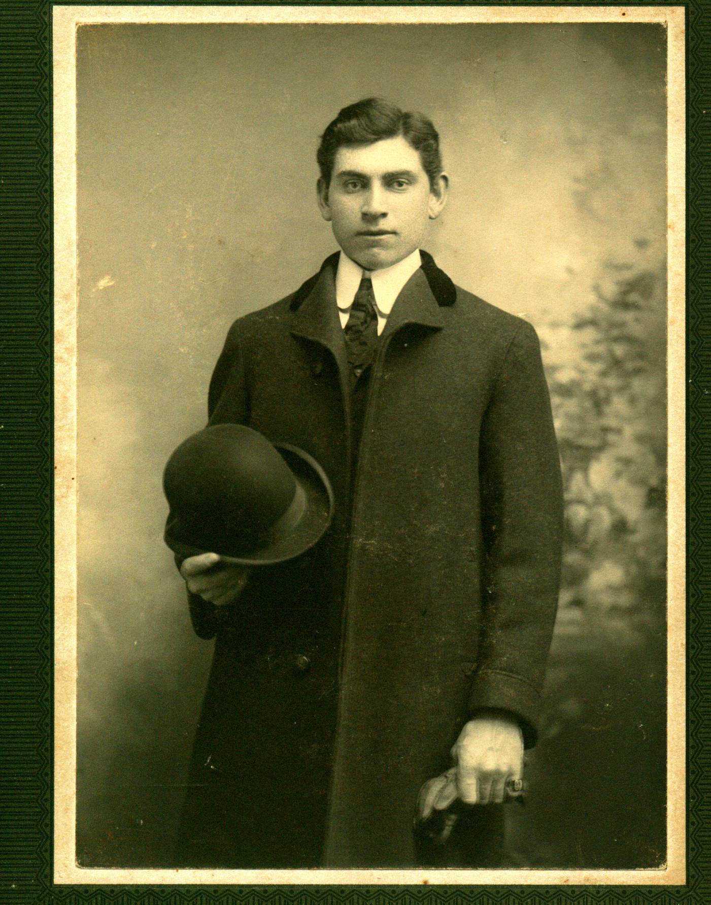
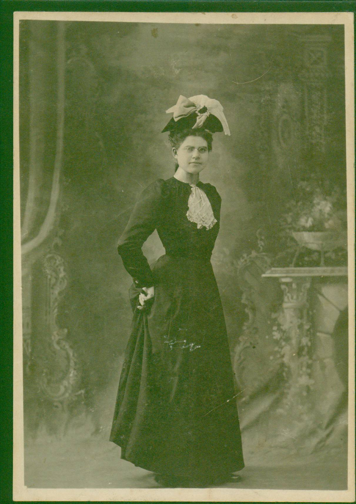
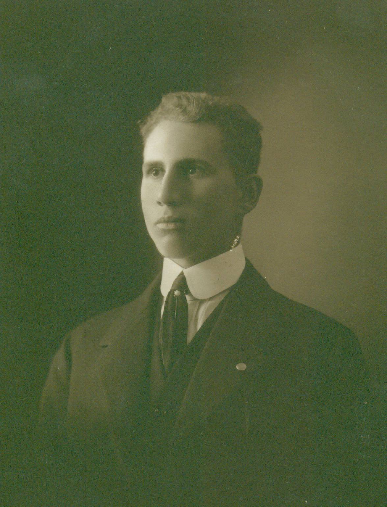
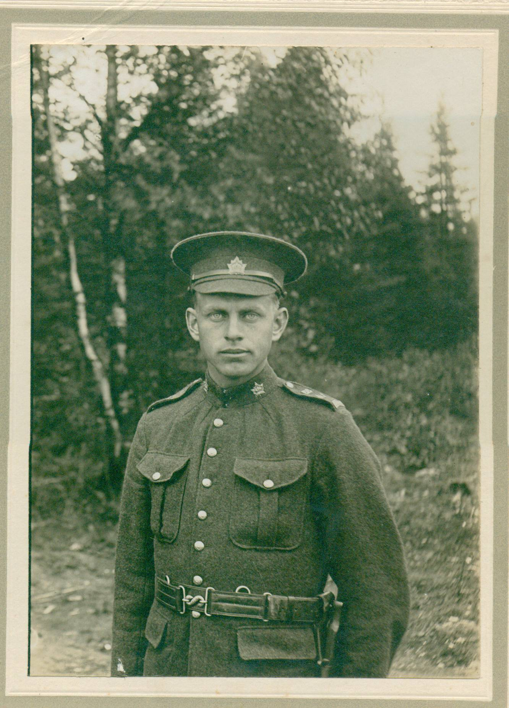

Glendenning Family Memories
PLATE 3: Elmer’s Siblings
Photo not available
Venetia Emily Glendenning
1872-1960

Elmer Alton Glendenning
1875-1938
Photo
not available
John Franklin Glendenning
1876-1937

Mary Ann May Glendenning
1879-1955
Photo not available
Leonard Garfield Glendenning
1881-1958
Photo not available
Alda Jane Maud Glendenning
1883-1957
Photo not available
George Raymond Glendenning
1885 - 1970

Chipman Lowe Glendenning
1897 - 1948

Guy Wellington Glendenning
1889-1967
Photo not available
Lillian Christina Glendenning
1891-1894

Margaret Violet Glendenning
1893-1956
Photo not available
Rufus Henry Comeau Glendenning
1896-1898
Don Glendenning